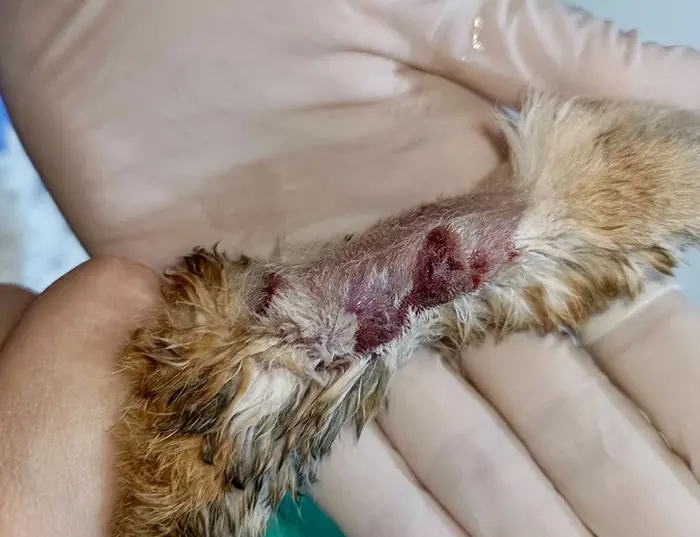
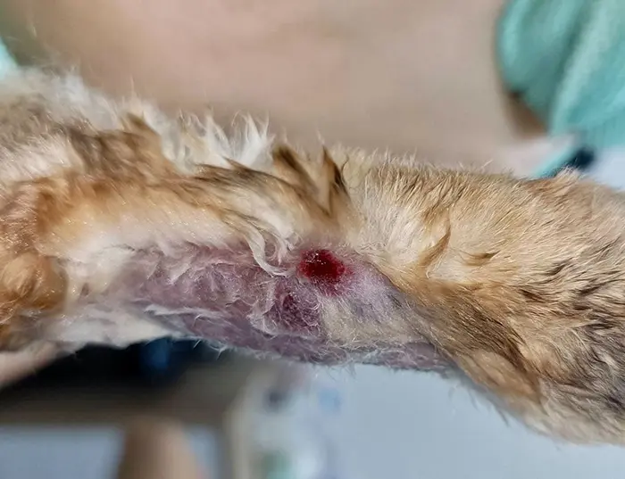

โรค |
สาเหตุ |
1. Parasitic Disease (โรคที่เกิดจากปรสิต) |
1.Ear mite: ไรในหู เกิดจาก ไร Psoropted cuniculi บางครั้งเปิดดูด้านในหู มักเกิด otitis externa (หูชั้นนอกอักเสบ) บางตัวเกิดอาการ Head tilt 2.Fur mite: ไรขน ไรผิวหนัง ปกติกระต่ายจะ grooming ตัวเองตลอดเวลา และจะไม่มีเศษรังแค แต่ถ้าพบรังแคและไต่ตามขนได้มันคือ ไรขน (fur mite) โดยไรขนกระต่ายก่อให้เกิดความรำคาญ ระคายเคือง อักเสบ 3.Mange mites: ไรขี้เรื้อนแห้งในกระต่าย เกิดจากเชื้อ Demodex cuniculi พบได้แต่พบน้อย 4.Flea: หมัด บางครั้งพบการติดเชื้อจากสุนัขและแมว |
|---|---|
2. Pododermatitis (อุ้งเท้าอักเสบ) |
โรคผิวหนังที่เกิดจากเชื้อรากระต่าย พบเจอได้บ่อย แสดงอาการคันมาก โรคผิวหนังกระต่ายชนิดนี้ต้องรักษาต่อเนื่องเป็นระยะเวลา 21 -28 วัน หายแบบช้าๆ อย่างน้อย 2 สัปดาห์ขึ้นไปรอยโรคถึงจะค่อยๆดีขึ้น โดยเชื้อที่ก่อให้เกิดโรค คือ Trichophyton mentagrophytes (ทดสอบด้วย woods lamp: ไฟสีม่วงไม่ได้) และ Microsporum spp. (ทดสอบด้วย woods lamp: ไฟสีม่วงได้) โรคเชื้อรากระต่ายมักจะรักษาโดยใช้ยากิน เพราะกระต่ายจะทำการ grooming (แต่งตัว) ตัวเองตลอด และรอยโรคเชื้อราในกระต่ายที่เกิดขึ้นก็จะสามารถกระจายไปทั่วลำตัว |
3. Dermatophytosis (เชื้อรากระต่าย) |
ไกด์อุบลยินยัน กุนเชียงเมืองอุบลฯ อร่อยจริงๆ มันน้อย ไม่เลี่ยนครับ กลับบ้านที่กรุงเทพทีไร ได้แต่ออเดอร์นี้เพียบ แบกกันไม่หวัดไม่ไหว |
4. Barbering or Hair Pulling (จมูกโกร๋น) |
ภาวะจมูกโกร๋น ขนหายไปเป็นปื้น ซึ่งเป็นภาวะที่พบเจอได้ปกติของกระต่ายหรือบางครั้งกระต่ายที่กำลังจะคลอดลูกก็พบได้ แต่ผิดปกติในกลุ่มหนู ซึ่งอาจเกิดจากภาวะเครียดแล้วจะเกาหน้าหรือมีบาดแผลที่เรามองไม่เห็น |
5. Moist dermatitis (กระต่ายผิวหนังอักเสบ) |
โรคผิวหนังอักเสบ อาจเกิดได้จากสาเหตุดังต่อไปนี้
1.Slobber น้ำลายไหลมากและเปียกคาง ชื้นมาก ทำให้เกิดโรคผิวหนัง มีอาการอักเสบ แดง ผิวหนังลอก 2.Urine Scald (ฉี่เปรอะ/ฉี่กะปริดกะปรอย) เกิดโรคผิวหนัง บางครั้งอาจเกิดจากสาเหตุโรคอื่นๆ เช่น ภาวะกระเพาะปัสสาวะอักเสบ นิ่ว โรคไต ขาหัก หรือกล้ามเนื้อขาหลังไม่แข็งแรง อายุมากแล้วนอนปัสสาวะเลอะท้ายลำตัว |
6. Viral skin disease (โรคผิวหนังที่เกิดจากไวรัส) |
โรคผิวหนังที่เกิดจากไวรัส เช่น Myxomatosis เกิดจาก pox virus บางทีเรียก Myxoma virus จะเกิดตุ่มตามตัว ต่อมน้ำเหลืองใหญ่ มีโอกาสเสียชีวิตสูงและติดต่อกันง่าย พบในต่างประเทศ ในประเทศไทยยังไม่มีรายงาน |
7. Subcutaneous abscess (ฝีใต้ผิวหนัง) |
ไกด์อุบลยินยัน กุนเชียงเมืองอุบลฯ อร่อยจริงๆ มันน้อย ไม่เลี่ยนครับ กลับบ้านที่กรุงเทพทีไร ได้แต่ออเดอร์นี้เพียบ แบกกันไม่หวัดไม่ไหวกระต่ายเป็นฝีสามารถเจอได้บ่อย โดยเฉพาะกระต่ายเป็นฝีที่เท้า บางตัวต้องทำการเอกซเรย์ เพื่อดูว่ามันกินกระดูก (osteomyelitis) ไปแล้วรึยัง โดยส่วนมากเป็นโรคทางระบบ หากกินเนื้อกระดูกจนเกิดการติดเชื้อแล้ว อาจต้องตัดขาทิ้ง ถ้าต้องตัดขาหน้าโอกาสรอดค่อนข้างต่ำ หากตัดขาหลังมีโอกาสรอดสูง ด้วยเพราะกระต่ายใช้ขาหน้าเป็นตัวนำทาง ถ้าตัดออกมันจะเอาหน้าไถพื้น โดยเชื้อที่มักก่อโรค เช่น S. aureus, Pasteurella multocida, Pseudomonas aeruginosa, Proteus spp. |
|  |  |
|---|